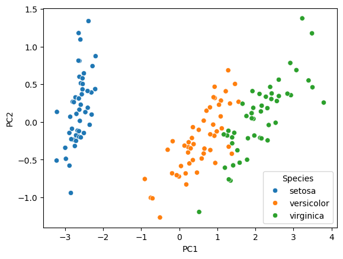
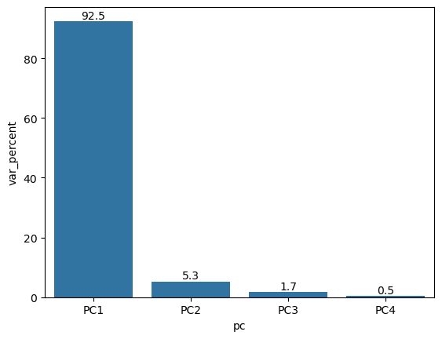
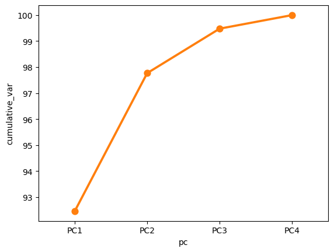
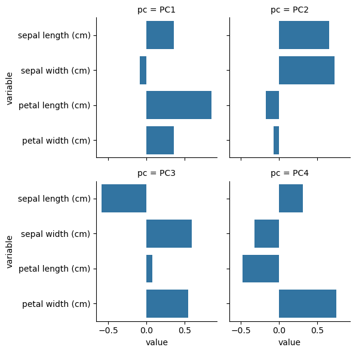
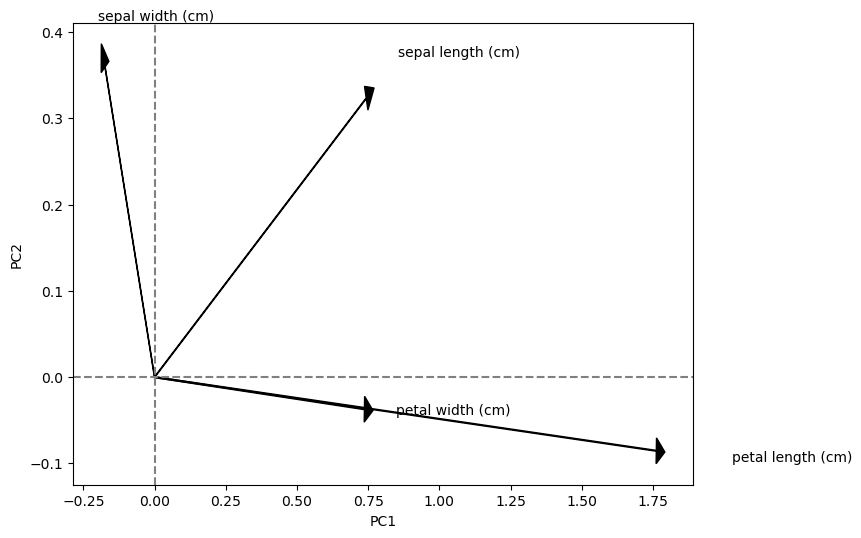
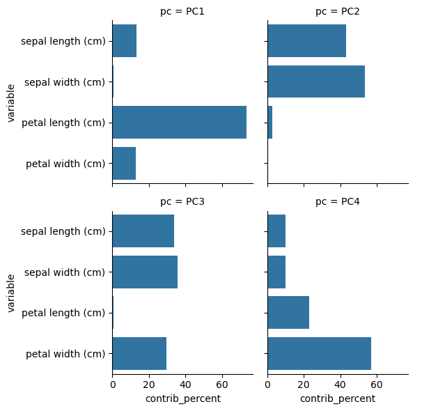
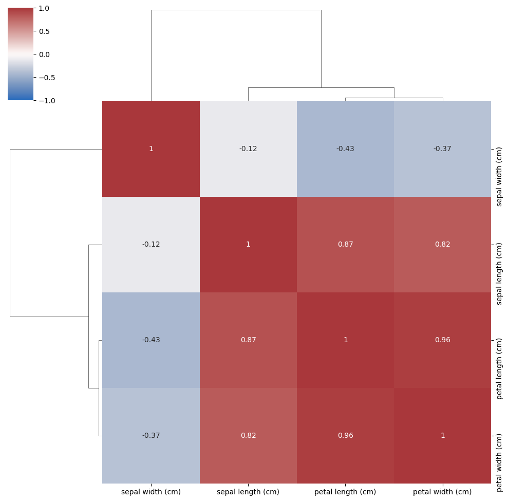

import seaborn as sns
from sklearn import datasets
import pandas as pd
import numpy as np
from sklearn.decomposition import PCA
import matplotlib.pyplot as plt
Practical Guide to PCA visualization in Python#
This guide illustrates how to visualize the results of a PCA analysis
There is a sister notebook to this one in R here: Practical Guide to PCA visualization in R
Dataset#
iris = datasets.load_iris()
# columns = variables
# rows = observations
iris.data[:5]
array([[5.1, 3.5, 1.4, 0.2],
[4.9, 3. , 1.4, 0.2],
[4.7, 3.2, 1.3, 0.2],
[4.6, 3.1, 1.5, 0.2],
[5. , 3.6, 1.4, 0.2]])
Run a PCA decomposition#
pca_res = PCA()
pca_x = pca_res.fit_transform(iris.data)
component_names = list(map(lambda i: 'PC'+str(i+1), range(pca_x.shape[1])))
pca_x.shape
(150, 4)
Scatter plot of observations#
Observations are projected on the first 2 components
species_names = list(map(lambda k: iris.target_names[k], iris.target))
df = pd.DataFrame(pca_x, columns=component_names)
df['Species'] = species_names
sns.scatterplot(data=df, x='PC1', y='PC2', hue='Species')
plt.show()

Explained variance (eigenvalues)#
The amount of variance explained by each of the components
pca_res.explained_variance_
array([4.22824171, 0.24267075, 0.0782095 , 0.02383509])
df = pd.DataFrame({'var_percent': 100*pca_res.explained_variance_ratio_, 'pc': component_names})
ax = sns.barplot(data=df, x='pc', y='var_percent')
ax.bar_label(ax.containers[0], fmt='%.1f')
plt.show()

Cumulative variance#
df = pd.DataFrame({'var_percent': 100*pca_res.explained_variance_ratio_, 'pc': component_names})
df['cumulative_var'] = np.cumsum(df['var_percent'])
sns.lineplot(data=df, x='pc', y='cumulative_var')
sns.pointplot(data=df, x='pc', y='cumulative_var')
plt.show()

Component rotations (eigenvectors)#
Principal axes in feature space, representing the directions of maximum variance in the data
# columns = variables
# rows = components
pca_res.components_
array([[ 0.36138659, -0.08452251, 0.85667061, 0.3582892 ],
[ 0.65658877, 0.73016143, -0.17337266, -0.07548102],
[-0.58202985, 0.59791083, 0.07623608, 0.54583143],
[ 0.31548719, -0.3197231 , -0.47983899, 0.75365743]])
df = pd.DataFrame(pca_res.components_, columns=iris.feature_names)
df['pc'] = component_names
df = df.melt(id_vars=['pc'])
sns.catplot(data=df, x='value', y='variable', col='pc', kind='bar', col_wrap=2, height=3)
plt.show()

Component loadings#
Eigenvectors scaled by the square root of the eigenvalues
sdev = np.sqrt(pca_res.explained_variance_)
var_cor = pca_res.components_.T * sdev
# columns = components
# rows = variables
var_cor
array([[ 0.743108 , 0.32344628, -0.16277024, 0.04870686],
[-0.17380102, 0.35968937, 0.16721151, -0.04936083],
[ 1.76154511, -0.08540619, 0.02132015, -0.07408051],
[ 0.73673893, -0.03718318, 0.15264701, 0.11635429]])
plt.figure(figsize=(8,6))
for i, r in enumerate(var_cor):
plt.arrow(0, 0, r[0], r[1],head_width=0.03, head_length=0.03, color='black')
plt.text(r[0] * 1.15, r[1] * 1.15, iris.feature_names[i], fontsize=10)
plt.axvline(x=0, linestyle='--', color='gray')
plt.axhline(y=0, linestyle='--', color='gray')
plt.xlabel('PC1', fontsize=10)
plt.ylabel('PC2', fontsize=10)
plt.show()

Component contributions#
Measures the contribution of the variables to each component
var_cos2 = var_cor ** 2
var_contrib = (100 * var_cos2) / var_cos2.sum(axis=0)
# columns = components
# rows = variables
var_contrib
array([[13.06002687, 43.11088146, 33.87587478, 9.95321689],
[ 0.71440554, 53.31357208, 35.74973608, 10.2222863 ],
[73.38845271, 3.00580802, 0.58119393, 23.02454534],
[12.83711488, 0.56973844, 29.79319522, 56.79995147]])
df = pd.DataFrame(var_contrib.T, columns=iris.feature_names)
df['pc'] = component_names
df = df.melt(id_vars=['pc'], value_name='contrib_percent')
sns.catplot(data=df, x='contrib_percent', y='variable', col='pc', kind='bar', col_wrap=2, height=3)
plt.show()

Correlation of all variables#
Compare the correlations with the components found by PCA
corr = np.corrcoef(iris.data.T)
sns.clustermap(corr, vmin=-1, vmax=1, cmap='vlag', annot=True, xticklabels=iris.feature_names, yticklabels=iris.feature_names)
plt.show()
